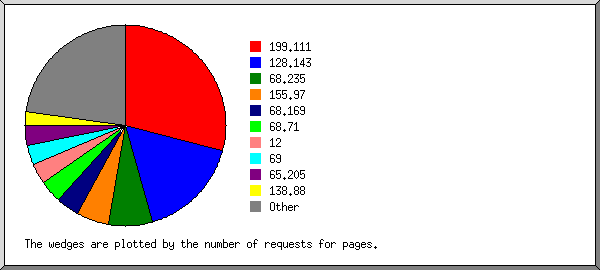
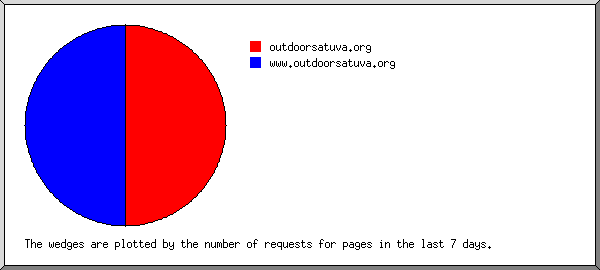
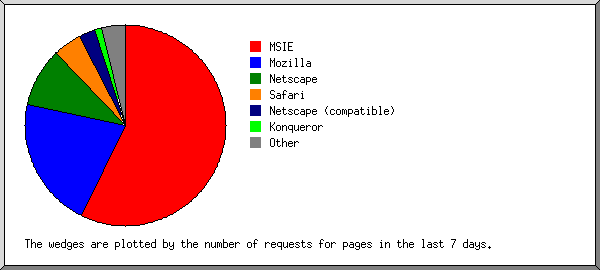
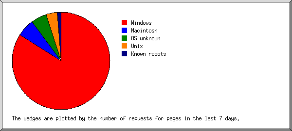
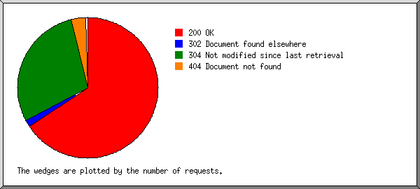

) represents 20 megabytes
or part thereof.
) represents 20 megabytes
or part thereof.
(Figures in parentheses refer to the 7-day period ending
15-Oct-2004 02:46).
Successful requests: 203,575 (16,974)
Average successful requests per day: 1,295 (2,424)
Successful requests for pages: 5,175 (353)
Average successful requests for pages per day: 32 (50)
Failed requests: 7,884 (914)
Distinct files requested: 12,753 (2,569)
Distinct hosts served: 2,843 (741)
Data transferred: 1.25 gigabytes (118.30 megabytes)
Average data transferred per day: 8.17 megabytes (16.90 megabytes)
Each unit () represents 20 megabytes
or part thereof.
month: pages: Mbytes: --------: -----: ------: May 2004: 34: 1.62:Busiest month: Sep 2004 (782.82 megabytes).Aug 2004: 777: 217.68:
Oct 2004: 796: 250.23:
Each unit () represents 8 requests
for pages or part thereof.
date: pages: Mbytes: ---------: -----: ------: 10/May/04: 1: 0.00:Busiest day: 7/Sep/04 (311 requests for pages).4/Aug/04: 12: 1.37:
7/Sep/04: 311: 72.72:
Each unit () represents 10 requests
for pages or part thereof.
hour: pages: %bytes: ----: -----: ------: 0: 212: 3.91%:
Listing domains, sorted by the number of requests for pages.
pages: 7-day pages: domain -----: -----------: ------ 5175: 353: [unresolved numerical addresses]

Listing the top 20 organisations by the number of requests for pages, sorted by the number of requests for pages.
pages: %bytes: organisation -----: ------: ------------ 1509: 25.01%: 199.111 847: 15.20%: 128.143 368: 6.22%: 68.235 268: 6.05%: 155.97 197: 3.20%: 68.169 187: 2.17%: 68.71 169: 2.97%: 12 168: 3.23%: 69 165: 10.59%: 65.205 113: 1.18%: 138.88 78: 2.92%: 64.4 75: 1.58%: 68.232 69: 1.24%: 24.51 56: 0.88%: 68.98 54: 0.04%: 65.214 52: 0.91%: 65.247 47: 0.62%: 132.250 43: 2.41%: 67.76 37: 0.46%: 65.40 34: 1.27%: 65.169 639: 11.86%: [not listed: 615 organisations]
Listing the top 50 hosts by the number of requests for pages, sorted by the number of requests for pages.
pages: %bytes: host -----: ------: ---- 344: 5.82%: 68.235.162.127 268: 6.05%: 155.97.193.95 165: 10.59%: 65.205.165.30 116: 1.40%: 199.111.192.230 112: 0.84%: 68.71.228.224 110: 1.16%: 138.88.73.176 81: 1.64%: 12.39.206.11 56: 0.88%: 68.71.226.53 51: 0.77%: 68.98.170.194 51: 0.02%: 65.214.36.13 47: 0.62%: 132.250.133.63 46: 0.33%: 199.111.201.189 45: 1.59%: 128.143.168.121 36: 2.06%: 64.4.106.254 34: 0.23%: 12.39.206.12 31: 0.38%: 199.111.231.110 30: 0.34%: 68.169.45.91 28: 0.16%: 199.111.244.101 28: 0.33%: 199.111.194.165 25: 0.30%: 199.111.231.200 23: 0.25%: 199.111.213.171 22: 0.32%: 128.143.19.75 21: 1.94%: 67.76.91.216 20: 0.11%: 199.111.236.173 19: 0.15%: 199.111.213.203 18: 0.72%: 199.111.194.131 17: 0.26%: 128.143.10.119 16: 0.29%: 199.111.195.83 16: 0.12%: 68.227.206.55 16: 0.16%: 199.111.241.103 15: 0.20%: 199.111.242.136 15: 0.17%: 199.111.244.154 15: 0.49%: 199.111.215.223 15: 0.17%: 128.143.41.225 15: 0.22%: 199.111.231.180 14: 0.25%: 12.5.52.164 14: 0.23%: 199.111.244.175 14: 0.14%: 199.111.243.196 14: 0.09%: 64.4.98.8 14: 0.40%: 63.167.129.131 13: 0.12%: 68.232.143.172 13: 0.10%: 199.111.205.223 13: 0.20%: 199.111.195.97 13: 0.12%: 199.111.229.188 13: 0.20%: 199.111.179.254 13: 0.10%: 128.143.62.15 13: 0.22%: 199.111.245.234 12: 0.16%: 65.247.228.96 12: 0.11%: 207.46.98.132 11: 0.11%: 199.111.235.214 3012: 56.34%: [not listed: 2,793 hosts]
Listing referring sites with at least 1 request for a page in the last 7 days, sorted by the number of requests for pages in the last 7 days.
pages: 7-day pages: site
-----: -----------: ----
527: 28: http://www.student.virginia.edu/
99: 5: http://www.uvastudentcouncil.com/
2: 2: http://www.runbox.com/
42: 2: http://outdoors.student.virginia.edu/
6: 2: http://search.msn.com/
1: 1: http://r.mail.virginia.edu/
2: 1: https://webmail.jmu.edu/
9: 1: http://www.whois.sc/
2: 1: http://www.netcraft.com/
170: 0: [not listed: 66 sites]
Listing referring URLs with at least 1 request for a page in the last 7 days, sorted by the number of requests for pages in the last 7 days.
pages: 7-day pages: URL
-----: -----------: ---
402: 28: http://www.student.virginia.edu/~outdoors/
99: 5: http://www.uvastudentcouncil.com/ciocentral/group_display.php
98: 5: http://www.uvastudentcouncil.com/ciocentral/group_display.php?org_id=34
1: 0: http://www.uvastudentcouncil.com/ciocentral/group_display.php?org_id=217
6: 2: http://search.msn.com/results.aspx
1: 1: http://search.msn.com/results.aspx?q=outdoorsatuva.org&FORM=DNSERR
2: 1: http://search.msn.com/results.aspx?q=www.outdoorsatuva.org&FORM=DNSERR
0: 0: http://search.msn.com/results.aspx?q=University+of+Virginia+Outdoors+club&FORM=DNSERR
0: 0: http://search.msn.com/results.aspx?q=outdoor+at+uva&FORM=DNSERR
1: 0: http://search.msn.com/results.aspx?srch=105&FORM=AS5&q=outdoorsatuva
1: 0: http://search.msn.com/results.aspx?q=outdoors+at+uva&FORM=DNSERR
0: 0: http://search.msn.com/results.aspx?q=outdoors+at+UVA&FORM=DNSERR
1: 0: http://search.msn.com/results.aspx?q=uva+outdoors+club&FORM=DNSERR
0: 0: http://search.msn.com/results.aspx?srch=104&FORM=AS4&q=outdoors+at+uva
0: 0: http://search.msn.com/results.aspx?FORM=SMCRT&q=Outdoors at UVa
2: 2: http://www.runbox.com/mail/read
2: 2: http://www.runbox.com/mail/read?folder_id=1103180&order=&direction=&offset=0&message=86577
0: 0: http://www.runbox.com/mail/read?folder_id=837220&order=&direction=&offset=0&message=92423
0: 0: http://www.runbox.com/mail/read?folder_id=1103180&order=&direction=&offset=0&message=43921
9: 1: http://www.whois.sc/outdoorsatuva.org
2: 1: http://www.netcraft.com/survey/
13: 1: http://outdoors.student.virginia.edu/
1: 1: http://outdoors.student.virginia.edu/gallery/TroutCave/IMG_1906
1: 1: http://r.mail.virginia.edu/Redirect/www.outdoorsatuva.org
2: 1: https://webmail.jmu.edu/cgi-bin/fetch.cgi
2: 1: https://webmail.jmu.edu/cgi-bin/fetch.cgi?url=http://www.outdoorsatuva.org
0: 0: https://webmail.jmu.edu/cgi-bin/fetch.cgi?url=http://www.outdoorsatuva.org/members.php%3Fpage%3Dadventure%26action%3D1%26object%3D364
0: 0: https://webmail.jmu.edu/cgi-bin/fetch.cgi?url=http://www.outdoorsatuva.org/members.php%3Fpage%3Dmain%26action%3Dpast-adventures),
323: 0: [not listed: 404 URLs]

Listing query words with at least 0.5% of the requests for pages in the last 7 days, sorted by the number of requests for pages in the last 7 days.
pages: 7-day pages: %7-day pages: search term
-----: -----------: ------------: -----------
4: 1: 50.00%: outdoorsatuva.org
8: 1: 50.00%: www.outdoorsatuva.org
0: 0: : \xbd\xba\xc5\xb2\xbd\xba\xc4\xed\xb9\xf6
0: 0: : river
0: 0: : top
0: 0: : marshall's
0: 0: : park
0: 0: : scuba
0: 0: : in
0: 0: : cave
0: 0: : boulders
0: 0: : ramsey's
0: 0: : master's
0: 0: : camping
0: 0: : horsebackriding
0: 0: : canyon
0: 0: : photo
0: 0: : draft
0: 0: : nc
0: 0: : deryn
0: 0: : richmond
0: 0: : gym
0: 0: : horseback
0: 0: : moorman's
0: 0: : of
0: 0: : rocks
0: 0: : man
0: 0: : fayetteville
0: 0: : rocky
0: 0: : ridge
0: 0: : humpback
0: 0: : inurl:outdoorsatuva
0: 0: : cook
0: 0: : gauley
0: 0: : james
0: 0: : trail
0: 0: : parkway
0: 0: : shenandoah
0: 0: : volunteering
0: 0: : dolly
0: 0: : lynchburg
0: 0: : 2004
0: 0: : \xbd\xba\xc4\xed\xb9\xf6\xb4\xd9\xc0\xcc\xba\xf9
0: 0: : seneca
0: 0: : to
0: 0: : inn
0: 0: : va
0: 0: : virginia
8: 0: : uva
0: 0: : riding
0: 0: : little
0: 0: : diving
0: 0: : mountain
2: 0: : club
0: 0: : goodwin
0: 0: : cliffs
0: 0: : balcony
0: 0: : sherando
0: 0: : whitewater
0: 0: : kayak
0: 0: : university
0: 0: : canoeing
0: 0: : wv
0: 0: : rock
0: 0: : moorman
0: 0: : charlottesville
0: 0: : -jennifer
0: 0: : white
2: 0: : link:
0: 0: : tubing
0: 0: : thiago
0: 0: : franklin
8: 0: : outdoors
0: 0: : blue
0: 0: : bouldering
0: 0: : beaver
0: 0: : stoney
0: 0: : falls
0: 0: : aarash
0: 0: : creek
0: 0: : chili
6: 0: : at
0: 0: : sofla
0: 0: : caving
0: 0: : hiking
0: 0: : climbing
0: 0: : ize
0: 0: : observatory
0: 0: : biking
0: 0: : outdoor
0: 0: : and
0: 0: : oak
0: 0: : gorge
0: 0: : upper
0: 0: : kayaking
1: 0: : outdoorsatuva
0: 0: : mount
0: 0: : whiteoak
Listing queries with at least 1 request for a page in the last 7 days, sorted by the number of requests for pages in the last 7 days.
7-day pages: search term
-----------: -----------
1: outdoorsatuva.org
1: www.outdoorsatuva.org
0: [not listed: 60 search terms]

Listing browsers with at least 1 request for a page in the last 7 days, sorted by the number of requests for pages in the last 7 days.
pages: 7-day pages: %7-day pages: browser
-----: -----------: ------------: -------
3250: 197: 57.10%: MSIE
3127: 185: 53.62%: MSIE/6
114: 10: 2.90%: MSIE/5
9: 2: 0.58%: MSIE/4
1264: 73: 21.16%: Mozilla
1264: 73: 21.16%: Mozilla/1
196: 33: 9.57%: Netscape
193: 33: 9.57%: Netscape/7
197: 16: 4.64%: Safari
169: 12: 3.48%: Safari/125
27: 4: 1.16%: Safari/85
87: 9: 2.61%: Netscape (compatible)
10: 4: 1.16%: Konqueror
10: 4: 1.16%: Konqueror/3
15: 3: 0.87%: Googlebot
15: 3: 0.87%: Googlebot/2
3: 3: 0.87%: waol.exe
18: 2: 0.58%: msnbot
18: 2: 0.58%: msnbot/0
17: 2: 0.58%: Microsoft-WebDAV-MiniRedir
17: 2: 0.58%: Microsoft-WebDAV-MiniRedir/5
2: 1: 0.29%: Jetbot
2: 1: 0.29%: Jetbot/1
9: 1: 0.29%: SurveyBot
9: 1: 0.29%: SurveyBot/2
9: 1: 0.29%: Microsoft Data Access Internet Publishing Provider Protocol Discovery
45: 0: : [not listed: 26 browsers]

Listing operating systems, sorted by the number of requests for pages in the last 7 days.
pages: 7-day pages: %7-day pages: OS
-----: -----------: ------------: --
4561: 290: 84.06%: Windows
3689: 230: 66.67%: Windows XP
598: 36: 10.43%: Windows 2000
212: 19: 5.51%: Windows 98
21: 3: 0.87%: Windows NT
2: 1: 0.29%: Windows 95
37: 1: 0.29%: Windows ME
2: 0: : Unknown Windows
271: 20: 5.80%: Macintosh
148: 18: 5.22%: OS unknown
92: 13: 3.77%: Unix
88: 13: 3.77%: Linux
4: 0: : SunOS
50: 4: 1.16%: Known robots
Listing directories, sorted by the number of requests for pages in the last 7 days.
pages: 7-day pages: %7-day bytes: directory
-----: -----------: ------------: ---------
4491: 325: 35.04%: [root directory]
28: 6: 0.03%: http://
49: 5: 0.11%: /pub-files/
5: 5: 26.83%: /gallery/
1: 1: 0.65%: /gallery/setup/
0: 0: 0.32%: /gallery/StMarys/
0: 0: 0.17%: /gallery/album60/
0: 0: 0.05%: /gallery/album25/
0: 0: 0.19%: /gallery/album62/
0: 0: 0.04%: /gallery/album26/
0: 0: 0.05%: /gallery/album63/
0: 0: 0.05%: /gallery/CedarWhiteoak/
0: 0: 0.26%: /gallery/album66/
0: 0: 0.15%: /gallery/album67/
0: 0: 0.01%: /gallery/trailwork/
0: 0: 0.25%: /gallery/Franklin_Sept-03/
0: 0: 0.17%: /gallery/album69/
0: 0: 0.06%: /gallery/RiprapHollow/
0: 0: 0.02%: /gallery/album30/
0: 0: 0.01%: /gallery/album33/
0: 0: 0.03%: /gallery/LaurelFork/
0: 0: 0.26%: /gallery/album71/
0: 0: 0.10%: /gallery/GauleyFest/
0: 0: 0.32%: /gallery/OldRag/
0: 0: 0.16%: /gallery/album72/
0: 0: 0.05%: /gallery/album37/
0: 0: 0.17%: /gallery/album38/
0: 0: 0.04%: /gallery/album39/
0: 0: 0.75%: /gallery/album76/
0: 0: 0.07%: /gallery/cave/
0: 0: 0.01%: /gallery/Florida/
0: 0: 0.89%: /gallery/album79/
0: 0: 2.44%: /gallery/albums/
0: 0: 0.02%: /gallery/Little_Stony_Man_Cliffs-Aug03/
0: 0: 0.27%: /gallery/skins/
0: 0: 0.11%: /gallery/FrozenWaterfalls/
0: 0: 0.15%: /gallery/ColdMountain/
0: 0: 0.33%: /gallery/AppalachianTrail/
0: 0: 0.01%: /gallery/html_wrap/
0: 0: 0.18%: /gallery/IndoorClimbing/
0: 0: 0.05%: /gallery/album40/
0: 0: 0.10%: /gallery/Waterfalls/
0: 0: 0.01%: /gallery/images/
0: 0: 0.10%: /gallery/album41/
0: 0: 0.02%: /gallery/album42/
0: 0: 0.07%: /gallery/album43/
0: 0: 0.14%: /gallery/album46/
0: 0: 0.08%: /gallery/album47/
0: 0: 0.20%: /gallery/album48/
0: 0: 0.12%: /gallery/TroutCave/
0: 0: 0.19%: /gallery/album49/
0: 0: 0.36%: /gallery/java/
0: 0: 0.01%: /gallery/css/
0: 0: 0.02%: /gallery/MarshallCave/
0: 0: 0.08%: /gallery/album12/
0: 0: 0.24%: /gallery/album50/
0: 0: 0.24%: /gallery/album51/
0: 0: 0.17%: /gallery/album54/
0: 0: 0.13%: /gallery/BeginnerandIntermediateClimbing/
0: 0: 0.10%: /gallery/album57/
24: 4: 0.94%: /bugs/
0: 0: 0.04%: /bugs/styles/
0: 0: : /bugs/admin/
0: 0: 0.02%: /bugs/templates/
179: 3: 0.81%: /~at/
57: 2: 0.22%: /~at/test/
1: 1: 0.38%: /~at/staging/
0: 0: : /~at/pages/
0: 0: : /~at/term/
41: 0: 0.15%: /~at/bugs/
1: 0: : /~at/about/
0: 0: 0.02%: /~at/assets/
0: 0: 0.02%: /~at/images/
91: 2: 0.11%: /documents/
9: 0: : /documents/logs/
81: 2: 7.68%: /test/
0: 0: : /test/sql/
0: 0: 0.28%: /test/assets/
0: 0: 0.85%: /test/images/
0: 0: : /test/templates/
24: 1: : /about/
0: 0: 7.87%: /assets/
0: 0: 19.86%: /images/
0: 0: : /icons/
13: 0: 0.69%: /staging/
0: 0: 0.05%: /staging/images/
0: 0: 0.07%: /staging/assets/
190: 0: : /at/
108: 0: : /at/test/
1: 0: : /at/bugs/
0: 0: : /at/images/
0: 0: : /at/assets/
0: 0: 0.02%: [no directory]
0: 0: : /x05/
0: 0: : /templates/
0: 0: : /templates/member/
0: 0: : /sql/
0: 0: : /sql/queries/
Listing files with at least 0.0001% of the requests in the last 7 days, sorted by the number of requests in the last 7 days.
reqs: 7-day reqs: %7-day bytes: file ----: ----------: ------------: ---- 1: 0: : /at/test/pages/resources/officer-info.html 1: 0: : /~at/about/policies/discounts.html 3: 0: : /documents/blank-liability-waiver.pdf 1: 0: : /~at/bugs/docs/html/bugsearch.html 1: 0: : /~at/bugs/docs/html/bugdetail.html 2: 0: : /~at/bugs/docs/html/userguide.html 1: 0: : /~at/bugs/docs/html/configuration.html 3: 0: : /pub-files/leaders manual.pdf 1: 0: : /~at/bugs/docs/html/devguide.html 1: 0: : /~at/bugs/docs/html/installation.html 1: 0: : /~at/bugs/docs/html/adminguide.html
Listing extensions with at least 0.1% of the traffic, sorted by the amount of traffic.
reqs: %bytes: extension -----: ------: --------- 76931: 56.87%: .php [PHP] 44963: 29.73%: .jpg [JPEG graphics] 34411: 6.01%: .js [JavaScript code] 16286: 2.79%: .css [Cascading Style Sheets] 5165: 2.40%: [directories] 933: 1.02%: [no extension] 45: 0.25%: .xls 492: 0.24%: .JPG 12: 0.23%: .sql 10465: 0.18%: .png [PNG graphics] 64: 0.15%: .doc [Microsoft Word document] 13808: 0.14%: [not listed: 25 extensions]
size: 7-day reqs: %7-day bytes: reqs:
-----------: ----------: ------------: -----:
0: 5168: : 62948:
1B- 10B: 0: : 89:
11B- 100B: 246: 0.01%: 3820:
101B- 1kB: 780: 0.23%: 9028:
1kB- 10kB: 7192: 33.03%: 88695:
10kB-100kB: 3541: 58.53%: 38894:
100kB- 1MB: 46: 4.88%: 99:
1MB- 10MB: 1: 3.32%: 2:

Listing status codes, sorted numerically.
reqs: status code
------: -----------
141010: 200 OK
75: 206 Partial content
236: 301 Document moved permanently
3375: 302 Document found elsewhere
62490: 304 Not modified since last retrieval
599: 401 Authentication required
15: 403 Access forbidden
7197: 404 Document not found
17: 408 Request timeout
56: 414 Requested filename too long
Listing the top 30 files by the number of failed requests in the last 7 days, sorted by the number of failed requests in the last 7 days.
reqs: 7-day reqs: file ----: ----------: ---- 846: 207: /robots.txt 251: 28: /about/index.php 143: 17: /test/members.php 62: 12: /test/members.php?page=main&action=member-home 16: 16: /error.png 36: 14: /nw.gif 14: 12: /note.png 11: 11: /gallery/albums/member_Trips/7_a_uva1.highlight.jpg 53: 11: /&print=true 10: 10: /gallery/albums/climbing2002-2003/24_G.highlight.jpg 111: 9: /about/members.php 9: 9: /gallery/albums/Climbing2003-2004/DCP_3229.highlight.jpg 8: 8: /gallery/albums/Cycling/DCP_2851.highlight.jpg 7: 7: /gallery/albums/misc/Pic_015.highlight.jpg 33: 7: /index.php&print=true 6: 6: /gallery/albums/Watersports/DCP_3150.highlight.jpg 5: 5: /gallery/albums/Service/camping_highway0009.highlight.jpg 10: 4: /bugs/ 34: 4: /staging/members.php 42: 3: /bugs/index.php 25: 3: /pub-files/ 15: 3: /~at/test/ 2: 2: /gallery/albums/OldRag/IMG_2296.highlight.jpg 23: 2: /MSOffice/cltreq.asp 13: 2: /~at/bugs/index.php 27: 2: /test/ 11: 2: /scripts/nsiislog.dll 23: 2: /_vti_bin/owssvr.dll 3: 1: /gallery/TroutCave/IMG_1942 1: 1: /gallery/albums/album39/Picture_20.thumb.jpg 1: 1: /gallery/album45/assets/combo-box.js 6078: 496: [not listed: 2,314 files]
Listing referring URLs with at least 1 failed request in the last 7 days, sorted by the number of failed requests in the last 7 days.
reqs: 7-day reqs: URL ----: ----------: --- 57: 57: http://www.outdoorsatuva.org/gallery/albums.php 135: 42: http://www.outdoorsatuva.org/members.php 14: 14: http://www.outdoorsatuva.org/members.php?page=adventure&action=10&object=366 10: 10: http://www.outdoorsatuva.org/members.php?page=adventure&action=10&object=363 10: 10: http://www.outdoorsatuva.org/members.php?page=adventure&action=1&object=363 7: 7: http://www.outdoorsatuva.org/gallery/album45/PA180728 6: 2: http://k.mail.virginia.edu/Redirect/www.outdoorsatuva.org/test/members.php 2: 2: http://www.outdoorsatuva.org/gallery/Hiking 2: 1: http://www.student.virginia.edu/~outdoors/about/activities/scuba.php 8: 1: http://web.ask.com/web 1: 1: http://www.outdoorsatuva.org/gallery/setup/frame_test.php 9: 1: http://www.whois.sc/ 1179: 0: [not listed: 109 URLs]
Listing the top 10 files by the number of redirected requests in the last 7 days, sorted by the number of redirected requests in the last 7 days.
7-day reqs: reqs: file
----------: ----: ----
100: 2402: /members.php
22: 61: /members.php?page=member&action=24
11: 37: /members.php?page=report
11: 364: /members.php?page=join
47: 215: /test/members.php
20: 233: /bugs/bug.php
7: 136: /staging/members.php
5: 5: /gallery/do_command.php
5: 43: /pub-files
3: 3: /gallery
3: 4: /~at/staging/members.php
2: 2: /gallery/album01
2: 2: /gallery/manage_users.php
96: 566: [not listed: 112 files]
Listing the top 10 referring URLs by the number of redirected requests in the last 7 days, sorted by the number of redirected requests in the last 7 days.
reqs: 7-day reqs: URL ----: ----------: --- 2277: 98: http://www.outdoorsatuva.org/members.php 48: 20: http://www.outdoorsatuva.org/members.php?page=member&action=24 330: 11: http://www.outdoorsatuva.org/members.php?page=join 326: 10: http://www.outdoorsatuva.org/members.php?page=main&action=member-home 202: 46: http://www.outdoorsatuva.org/test/members.php 233: 20: http://www.outdoorsatuva.org/bugs/bug.php 72: 10: http://www.outdoorsatuva.org/bugs/bug.php?op=add 136: 7: http://www.outdoorsatuva.org/staging/members.php 3: 3: http://www.outdoorsatuva.org/gallery/albums.php 4: 3: http://nuumen.pair.com/~at/staging/members.php 168: 2: http://nuumen.pair.com/~at/bugs/bug.php 2: 2: http://www.outdoorsatuva.org/gallery/manage_users.php 2: 2: http://www.outdoorsatuva.org/gallery/album01 2: 2: http://www.outdoorsatuva.org/gallery/ 201: 4: [not listed: 22 URLs]